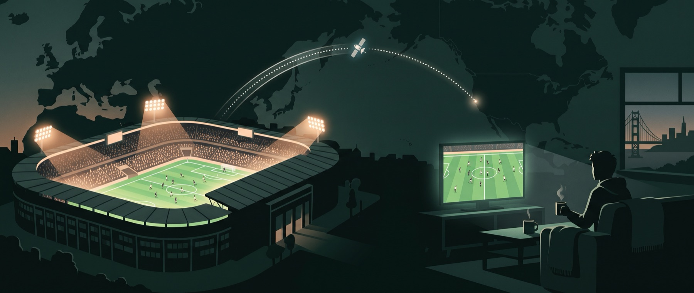
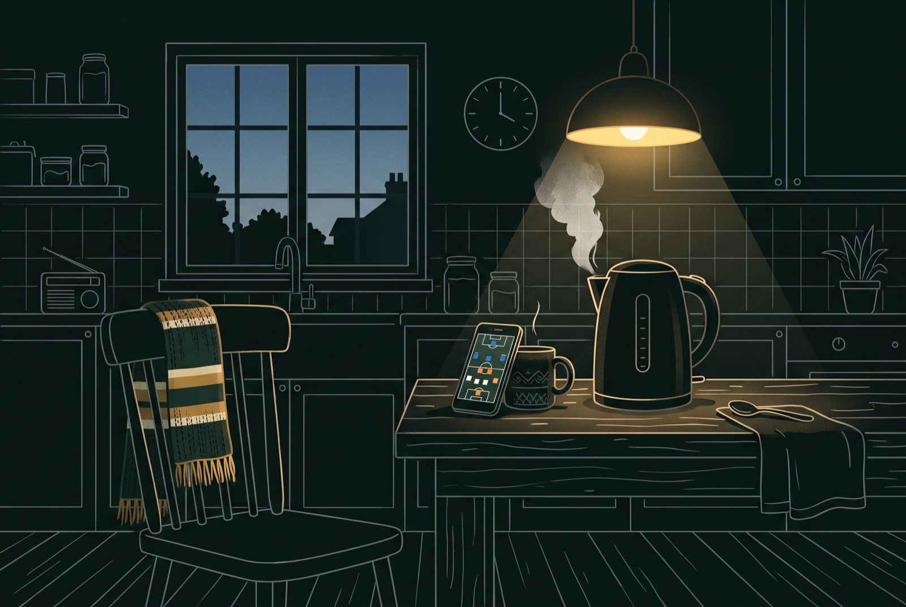

If your appreciation for the game is rooted in the clinical efficiency, rapid transitions, and intense spatial pressing of the Golden Era of German football (1998–2014), navigating the modern landscape means filtering out the noise and finding the matches worth the early alarm. Modern football pairs elite athletic output with more sophisticated spatial frameworks than ever — positional play, coordinated high pressing, video review at every top flight — and the calendar built around it has changed shape too: the 36-team Champions League format, contract sagas playing out in real time, and a broadcast map split across four different US services.
This page is the reading companion to the schedule rails and the full calendar: what each league actually feels like to watch, which clubs still play the football described above, how the Champions League's new format works, the derby dates worth circling, and when to actually tune in.
How to Watch
What airs where


The Leagues
Same format on paper — 34 to 38 games, most points wins, no playoff — but each league rewards a different kind of football, promotes and relegates differently, and feeds a different number of clubs into Europe. That's the actual reason to pick one over another on a given weekend.
Premier League
20 clubs · 38 games each · 380 total · Aug 21 – May 30 · PeacockEngland's top flight is the most physically demanding of the five: fewer stoppages for tactical fouling, relentless transition speed, and a competitive spread that runs deeper into the table than any other league — a mid-table side beating one of the traditional "big six" is a Saturday occurrence, not an upset. It's also the most-watched football product on the planet, which is exactly why it gets its own dedicated US service rather than sharing one.
La Liga
20 clubs · 38 games each · 380 total · Aug 15 – May 30 · ESPN+Spain rewards technical range over raw pace — patient combination play through tight central areas, games decided by a single moment of control rather than a wall of pressing. Real Madrid and Barcelona have historically split the silverware, but the chase behind them has gotten louder: Atlético's continued spending, and Athletic Bilbao's stubborn Basque-only cantera policy proving a self-imposed talent restriction can still finish mid-table year after year instead of collapsing into one.
Bundesliga
18 clubs · 34 games each · 306 total · Aug 28 – May 22 · Fandango / USA NetworkGermany draws the highest average attendance of any football league on the planet, built on cheap tickets and standing terraces that the league's 50+1 fan-ownership rule protects by design. On the pitch it's the sport's development pipeline right now — Florian Wirtz and Jamal Musiala both came up through it — with Bayern Munich's decade-plus of near-total domestic dominance as the backdrop everyone else is still trying to break.
Serie A
20 clubs · 38 games each · 380 total · Aug 23 – May 30 · Paramount+Italian football's reputation for defensive rigidity is older than most of its current back lines — Serie A has trended toward higher-scoring, more transitional football over the past decade without fully abandoning the tactical discipline that made catenaccio famous. Inter Milan is the league's one unbroken thread: the only club never relegated since Serie A's founding in 1929, sharing the San Siro with, and regularly separated from, city rival AC Milan.
Ligue 1
18 clubs · 34 games each · 306 total · Aug 21 – May 29 · beIN SportsFrance's top flight has run with 18 clubs since 2023–24, and its competitive picture is still built around one financial outlier: PSG's spending has outpaced the rest of the division for over a decade. Its more honest role in world football is as a proving ground — Kylian Mbappé, Ousmane Dembélé, and most of the current PSG academy graduates all broke through in Ligue 1 before the bigger paydays elsewhere.
Where the Pressing Went
The league identities above only get you to the right broadcast. The aesthetic this page opened with — high defensive line, coordinated press, direct vertical transition — lives at specific clubs, and the 2026–27 managerial reshuffle redrew where. The glossary's PPDA line, further down, is the number that separates the first camp from everyone else.
| Club | Manager | What to watch |
|---|---|---|
| The pressing heirs | ||
| Liverpool | Iraola, year one | The press his Bournemouth sides ran as high as anyone in England — with Wirtz's line-breaking passes as the outlet once the ball is won. |
| Bayern | Kompany | The highest line of the traditional powers; Musiala's tight-space control between the lines. |
| Athletic Club | Terzić, year one | Basque-only cantera, never relegated; Nico Williams forcing the 1v1. After 29th in the UCL phase and 12th at home, a single-competition season sets up the rebound. |
| The positional school | ||
| Man City | Maresca, year one | The Guardiola lineage he assisted in — slower, control through structured possession rather than chaos. |
| PSG | Luis Enrique | Hard counterpress to win the ball back, then positional patience in attack. |
| Arsenal | Arteta | Structure plus the set-piece machine; Gyökeres — the closest parallel to Haaland in Europe — attacking the space behind high lines. |
| The counterweight | ||
| Real Madrid | Mourinho | The anti-pressing watch: deep block, Valverde's engine, Mbappé and Vinícius released into the space high lines leave behind. Madrid vs the first camp = 2026 football vs 2010 pragmatism, live. |
 The Champions League Format
The Champions League Format
UEFA scrapped the four-team group stage after the 2023–24 season. In its place: a single 36-team league phase, where every club plays eight matches — four home, four away — against eight different opponents drawn from four seeding pots, instead of a closed group of three familiar rivals.
- The table decides everything — top 8 straight to the Round of 16 seeded, 9–24 into a two-legged play-off, 25 or worse out with no Europa League parachute.
- Tiebreakers, in order: goal difference → goals scored → away goals → total wins → away wins → then strength-of-schedule measures (points, goal difference and goals scored collected by your eight opponents).
- Knockouts: away goals abolished — level on aggregate after 180 minutes means 30 of extra time, then penalties.
How the pots & draw actually work
Cups & Knockouts
Beneath the continental competition, the domestic calendar runs on two different logics:
- The leagues are pure double round-robins — every club plays every other home and away, and the table alone decides the champion. No play-off, no final.
- FA Cup · Copa del Rey · DFB-Pokal: open single-elimination draws across the entire national pyramid — a lower-division amateur side can, in theory, draw Real Madrid.
- Carabao Cup: England's second knockout — top clubs rotate squads and play academy kids until the late rounds start to matter.
Beyond Europe
Everything above sits inside UEFA's ecosystem — video review at the top level, strict officiating standards, and broadcast windows built around a US audience with genuine choices. Step outside it and the viewing experience changes by region as much as the football does.
AFC Champions League Elite
The closest thing to a UEFA-style product in Asia: an expanding 32-team field from 2026–27, split into East and West regions, with Japan's J-League and South Korea's K League supplying most of the East's entrants. It has a reputation — deserved, by most accounts — for disciplined, high-tempo, technical football with comparatively few disciplinary stoppages.
Copa Libertadores
CONMEBOL's flagship runs on a different rhythm entirely. Time-wasting, provocation, and open hostility toward away teams and officials show up far more often than in equivalent UEFA fixtures — a genuinely different in-stadium atmosphere, worth knowing about before tuning in expecting the same conduct as a Tuesday night in the Champions League.
Reading a Match
A handful of numbers now travel with almost every match broadcast. None of them replace watching the game, but they're useful shorthand for what happened once the final whistle blows.
- xG expected goals
- Probability that each shot scores, given its position and situation, summed per team. Separates good chance creation from good finishing.
- PSxG post-shot xG
- Re-scores each on-target shot after it's struck, factoring placement and power. PSxG faced minus goals conceded is a cleaner read on a goalkeeper's shot-stopping than save percentage.
- PPDA passes per defensive action
- Opponent passes allowed per defensive action in their own build-up. Lower means a more aggressive press; a number that climbs across 90 minutes is often the first sign of fatigue.
- Field tilt
- Each team's share of possession played in the attacking third. Captures territorial dominance that a flat possession percentage hides.
- Goal timing
- Goal frequency by 15-minute window. Late-window spikes track fatigue, substitutions, and stoppage-time pushes.
- Forecast models
- Tournament outcomes simulated thousands of times from Elo ratings, UEFA coefficients, and xG trends, then benchmarked against prediction markets and betting odds — the method behind the WC2026 final report.
Storylines to Watch
Manchester City's verdict still hasn't landed.Pending The independent commission's hearing into 115 alleged Premier League financial-rule breaches between 2009 and 2018 concluded back in December 2024, and the sport has been waiting on a verdict ever since. Reported sanctions on the table range from a heavy points deduction to outright expulsion.
Vinícius Jr.'s contract saga is settled.Resolved A salary standoff pushed formal renewal talks past the World Cup, but on August 6 the club announced a six-year extension through 2032 — the saga ended with the biggest commitment Madrid could make.
Arsenal locked down its spine.Resolved Saliba re-signed in September 2025 and Saka followed in February 2026, keeping the core of Arteta's squad together well into the next decade.
A 16-year-old is having the breakout of the season.Breakout Max Dowman became the Premier League's youngest-ever goalscorer with a stoppage-time solo goal against Everton on March 14, 2026 — off a single league start — and picked up a PFA Young Player of the Year nomination on the strength of it.
Salah's decade at Anfield is over.Resolved He and Liverpool tore up the final year of his deal in March 2026 and he left when the season ended, closing a nine-year spell; on August 6 he signed a two-year deal with Trabzonspor, unveiled at Papara Park the next day.
Two of the traditional powers have new managers.2026–27 Mourinho took over at Real Madrid in June 2026, and Maresca replaces Guardiola at Manchester City after his decade in charge — two of the most-watched clubs on this list both enter the season under first-year management.
Circle These
Derbies are the fixtures where the form book means the least — the safest thing a neutral can block off months in advance. Dates below come from the app's own calendar; every one lands in a weekend morning window PT. This season's subplots:
- Mourinho's first Clásico in charge of Madrid since 2013.
- Maresca inheriting the Manchester derby from the manager he assisted.
- North London against an Arsenal spine that just signed through the decade.
Two of each, chronological
- Sep 20 is a doubleheader Sunday: Madrid derby 7:15a, Le Classique at the Vélodrome 11:45a — a full derby day without leaving the couch.
- May 9 Clásico: three weeks from La Liga's final day — close enough to decide the title outright.
- Missing: Serie A's Derby della Madonnina (Inter–Milan, shared San Siro) — Serie A fixtures aren't in the calendar yet; first date to add once they land.
Building a Season Around It
The rhythm of the year splits into four stretches:
